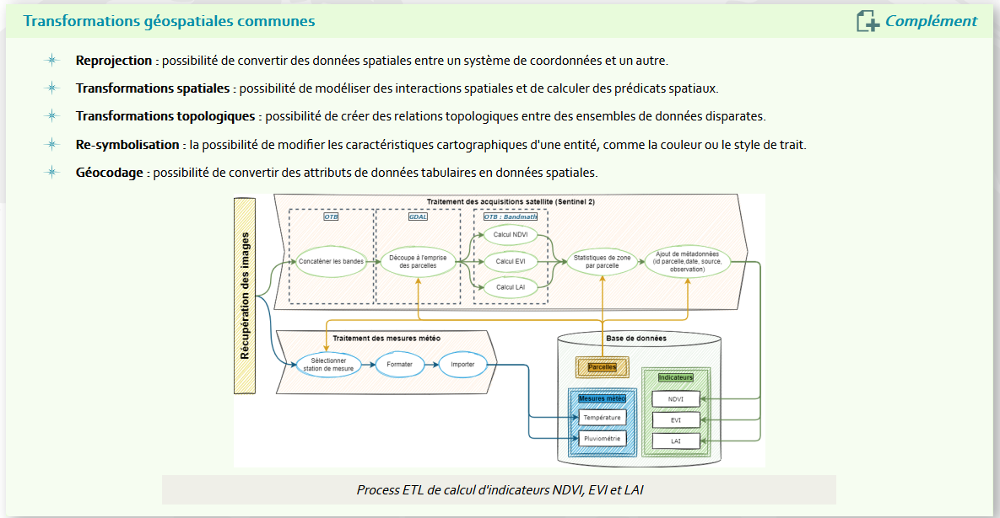
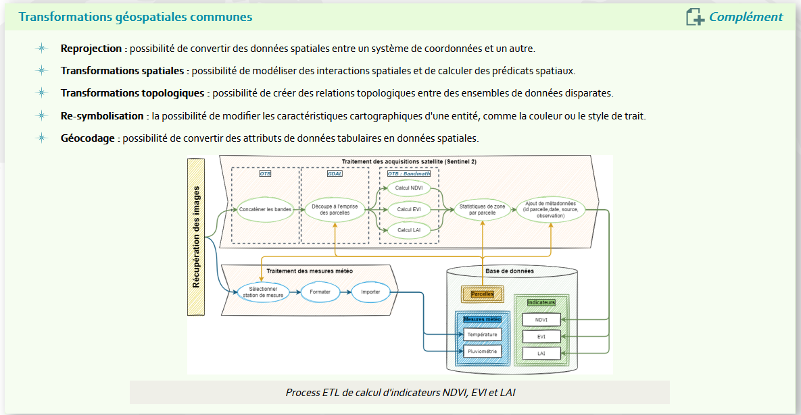
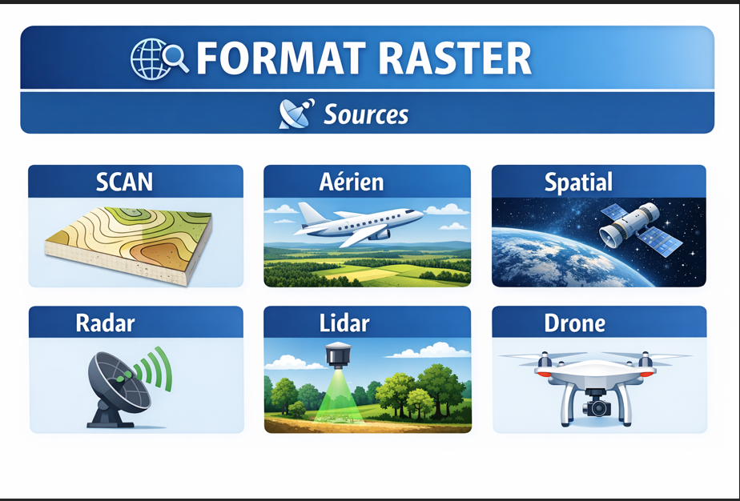

Accueil
Les sources
Cycles des donnees
Definition
elle est au coeur de la conduite de projet en geomatique les etapes du cycles de la donnee Planification Acquisition Verification Validation Reutilisation Archivage le catologage bonne pratique permet de clarifier les roles en designant qui sont les references de donnees et les simples
Le cycle de la donnée est au cœur de la conduite de projet en géomatique.
Il regroupe l’ensemble des étapes par lesquelles passe une donnée, de sa création à son archivage.
Planification
Définition des besoins
Identification des sources
Choix des formats et standards
Organisation des responsabilités
Acquisition
Collecte terrain
Téléchargement de données (IGN, Open Data, etc.)
Importation dans un SIG
Contrôle initial
Vérification
Contrôle de cohérence
Détection d’erreurs géométriques
Vérification des attributs
Validation
Validation technique
Validation métier
Approbation par le responsable du projet
Réutilisation
Partage au sein de l’équipe
Intégration dans d’autres projets
Publication (Open Data, portail interne)
Archivage
Sauvegarde
Versioning
Conservation à long terme
LES SOURCES
BD TOPO
PCI Plan Cadastral Informatisé
Données environnementales
INPN Inventaire National du Patrimoine Naturel
INPN - ZNIEFF - Natura 2000
Données énergie
EDF
GRDF
INTEROPERABILITE
Prise de notes
Objectifs
- Comprendre l’importance de l’interopérabilité dans notre discipline.
- Concevoir et intégrer cette notion dans la conduite d’un projet.
- Savoir décrire les principaux web services et leurs usages.
Définition de l'interopérabilité
On distingue plusieurs degres d'interoperabilité ### Les enjeux de l’interopérabilité
- Permettre l’échange de données entre différents logiciels SIG (QGIS, ArcGIS, GeoServer…).
- Assurer la compatibilité entre formats (Shapefile, GeoJSON, GPKG, raster…).
- Faciliter la mutualisation des données entre institutions (IGN, INPN, collectivités, opérateurs énergie).
- Garantir la pérennité des projets dans le temps.
- Éviter les silos de données.
Web services principaux :
- WMS (Web Map Service) → affichage d’images cartographiques.
- WFS (Web Feature Service) → accès aux données vectorielles.
- WMTS (Web Map Tile Service) → affichage optimisé en tuiles.
- WCS (Web Coverage Service) → données raster complètes.
- CSW (Catalogue Service for the Web) → recherche de métadonnées.

OGC
Organisation internationale à but non lucratif dédiée au développement des systèmes ouverts en géomatique.
Elle a été fondée en 1994 pour répondre aux problèmes de non interopérabilité des applications concernant l'information géographique.
Open Geospatial Consortium (OGC)
Les missions
- Regrouper les acteurs concernés afin de développer et promouvoir les standards ouverts.
- Garantir l'interopérabilité dans le domaine de la géomatique.
- Favoriser la coopération entre développeurs, fournisseurs et utilisateurs.
- Permettre de réaliser des systèmes et des services d'information complexes et ouverts.
- Impliquer l’ensemble de la communauté dans le processus d’interopérabilité.
OGC
Site officiel : OGC – Open Geospatial Consortium
Fondamental
Des ressources
- Une plateforme (le site).
- Les standards internationaux assurant l'interopérabilité.
- Des retours d'expériences et bonnes pratiques.
- Une communauté de membres.
- Des rapports et publications scientifiques
Les Géo standards pour une bonne diffusion
Le coeur de FAIR

Parmi les standards de l’OGC
Des Webservices (distants)
- WMS - Web Map Service
- WMTS - Web Map Tile Service
- WFS - Web Feature Service
- WCS - Web Coverage Service
- CS-W - Catalog Service Web
- WPS - Web Processing Service
Des formats (en local)
- SLD - Style Encoding Description
- GML - Geography Markup Language
- KML - Keyhole Markup Language
- GPKG - GeoPackage
- WKT CRS - Notation des CRS en WKT

Le Catalogage / Métadonnées
Axe de qualité de notre discipline.
La notion de diffusion de donnée a été confirmée par la possibilité de partager des données de qualité.
- Des données de qualité ⇒ exhaustives, propres et géométriquement correctes.
- Des données documentées ⇒ fiches de métadonnées suivant des normes de rédaction (ISO 19115 / 19139, INSPIRE, DCAT).
- Des données diffusables ⇒ catalogue de données / métadonnées, Catalogue Service Web (CSW).
- Des données réutilisables ⇒ accessibles, ouvertes.
Extract Transform Load
Un outils fiable => le traitement automatisé

Extact : le processus d'extraction doit convertir les données dans un format adapté à une transformation ultérieure
Transform : Nettoyage, Filtrage, Enrichissement, Division, (spliting), Regroupement.
Load : Les données transformées peuvent être chargé dans la base cible.
 

Les formats de données
Objectifs
À partir de différents logiciels (QGIS, ogr2ogr), aborder les multiples formats utilisés en géomatique. L'information géographique utilisée en géomatique se décline en deux types de données : les données vecteurs et les données rasters.
Les logiciels SIG vont stocker ces données vecteurs et rasters dans des fichiers dont le format est varié en fonction des logiciels.
Les formats utilisés en géomatique
Georezo a listé tous les formats utilisés :
Liste des extensions – Georezo
Cette liste n'est pas forcément exhaustive et beaucoup de formats ne sont pas ou peu utilisés dans la pratique (logiciels obsolètes, formats non utilisés en France).
RASTER
Source (SCAN, aérien, spatial, radar,lidar,drone)

VECTEUR (SHP, GEOJSON, GPKG, KML,GDB, PGIS,GPX)
VECTEUR